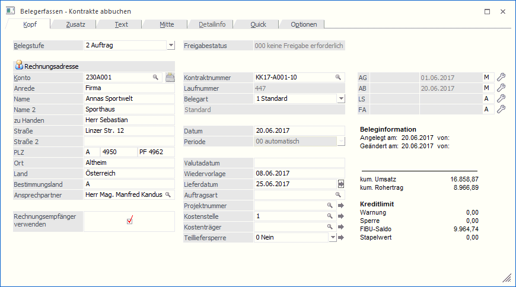
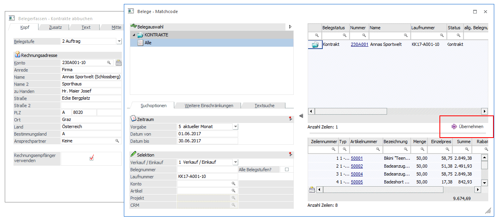
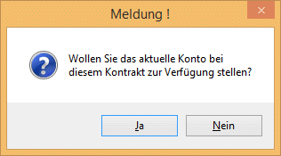
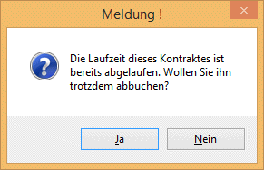
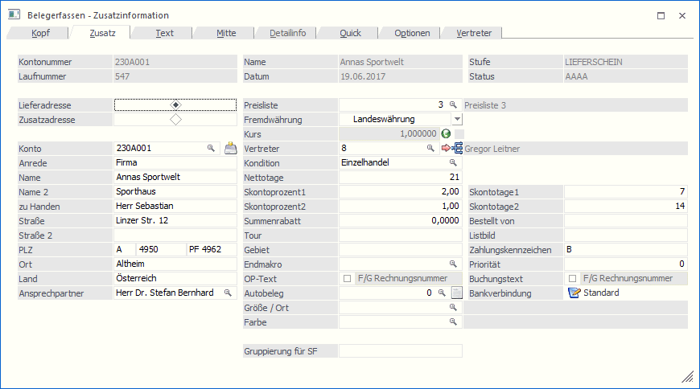
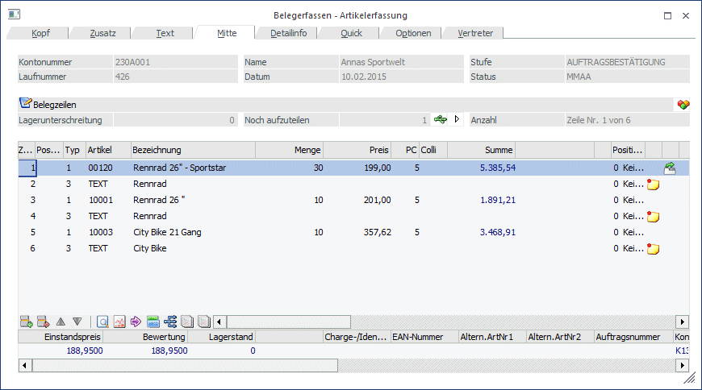
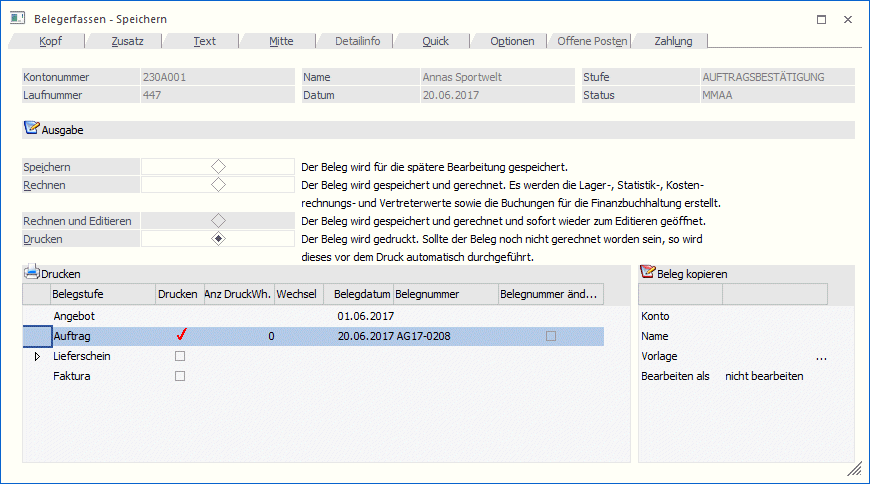
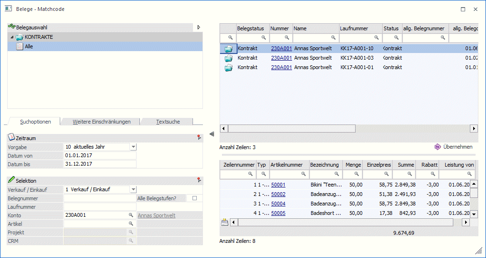

Im Menüpunkt…
1 WinLine FAKT
1 Erfassen
1 Kontraktverwaltung
1 Kontrakte abbuchen
… können bestehende Kontrakte aufgerufen und direkt als Beleg gedruckt werden.
Wird der Menüpunkt "Kontrakte abbuchen" aufgerufen, so öffnet sich das "Belegerfassen - Kontrakte abbuchen"-Fenster.

Hinweis
Das Fenster "Belegerfassen - Kontrakte abbuchen" kann nicht gleichzeitig mit dem "normalen" Belegerfassen geöffnet werden!
Ø Welche Belegstufe möchten Sie bearbeiten?
Aus der Auswahllistbox kann gewählt werden, in welcher Stufe ein Kontrakt bearbeitet, gespeichert, gerechnet, oder gedruckt werden soll.
Aktualisiert werden die Mengen im Kontrakt, sobald ein Kontraktpreis im Beleg verwendet wird. Dies erfolgt neben der Stufe "Faktura" auch in den Stufen "Auftrag" und "Lieferschein".
D.h. im Kontrakt gibt es zusätzlich die Informationen welche Menge bereits bestellt geliefert, oder fakturiert ist.
Ø Konto
Angabe des Kontos, für das der Kontrakt abgebucht werden soll.
Handelt es sich beim Kontrakt um einen Gruppenkontrakt, so kann dieser nur aufgerufen werden, wenn in diesem Feld ein Konto eingegeben wird und dieses Konto dieselbe Gruppe hinterlegt hat wie der Kontrakt.
Ø  Adressdaten aktualisieren
Adressdaten aktualisieren
Durch Drücken dieses Buttons (und entsprechender Bestätigung der "Sicherheitsabfrage") können die Adressdaten des angegebenen Personenkontos in den Personenkontenstamm übergeben werden.

Bei der Übergabe an den Stammdatensatz werden folgende Werte aktualisiert:
ü Anrede
ü zu Handen
ü Straße
ü Straße 2
ü Landeskennzeichen
ü PLZ
ü PLZ2
ü Ort
ü Land
Damit der Button "Adressdaten aktualisieren" zur Verfügung steht, muss dieser in der Fakt-Parametern aktiviert werden.
Ø Kontraktnummer
Im Feld "Kontraktnummer" kann jener Kontrakt angegeben werden, der als Beleg erfasst, bzw. in den möglichen Stufen abgebucht werden soll.
Mittels Matchcode (Beleg Match) kann nach bestehenden Kontrakten gesucht werden.
Hinweis
Handelt es sich beim Kontrakt um einen Gruppenkontrakt, so kann dieser nur über den Matchcode - d.h. Übernahme aus dem Beleg Match - ausgewählt werden.
Nachdem jedoch zuerst im "Belegerfassen-Hauptfenster" ein Personenkonto angegeben werden muss (und dieses auch in den Belegmatch übernommen wird), muss dieses anschließend im Belegmatch wieder entfernt werden, um auch die Kontengruppenbelege angezeigt zu bekommen!
Weiters besteht im Beleg Match die Möglichkeit, bestehende Kontrakte um zusätzliche Konten zu erweitern.
D.h. wird mit kontenübergreifenden Kontrakten gearbeitet, so kann die Funktion "Übernehmen" dazu verwendet werden, das aktuelle Konto zu einem bestehenden Kontrakt hinzuzufügen.

Ø Übernehmen
Wenn dieser Button gedrückt wird, wird das gerade im Kontrakte abbuchen geladene Konto beibehalten und der angewählte Kontrakt geladen. Falls das aktuelle Konto noch nicht in der Liste der zugelassenen Konten vorhanden ist (also dem Kontrakt noch nicht zugeordnet ist), wird diese dynamisch erweitert. Dazu muss die zugehörige Meldung entsprechend bestätigt werden:

Beim Laden des Beleges wird die Laufzeit des Kontraktes geprüft. Wird diese über-, oder unterschritten, so wird eine entsprechende Meldung ausgegeben.

Wird die Meldung mit "Ja" bestätigt, so kann der Kontrakt trotzdem abgebucht werden
Ø Laufnummer
Als Laufnummer wird jene Nummer angezeigt, mit der der Kontrakt(-Beleg) erstellt wurde.
Dieses Feld kann nicht bearbeitet werden.
Ø Weitere Eingabefelder
Die weiteren Eingabefelder in diesem Fenster entsprechen jenen aus dem "normalen" Belegerfassen.
Belegerfassen - Zusatzinformation
Jene Felder die bereits bei der Kontrakterfassung angegeben wurden (Preisliste, Listbild, usw.), werden mit deren Inhalte befüllt. So auch die Zahlungskonditionen, die ebenfalls bei der Kontrakterfassung bereits angegeben werden können.

Bei Bedarf können diese Felder natürlich manuell verändert werden.
Ø Adressdaten aktualisieren
Durch Drücken dieses Buttons (und entsprechender Bestätigung der "Sicherheitsabfrage") können die Adressdaten des angegebenen Personenkontos in den Personenkontenstamm übergeben werden.
Bei der Übergabe an den Stammdatensatz werden folgende Werte aktualisiert:
ü Anrede
ü zu Handen
ü Straße
ü Straße 2
ü Landeskennzeichen
ü PLZ
ü PLZ2
ü Ort
ü Land
Damit der Button "Adressdaten aktualisieren" zur Verfügung steht, muss dieser in der Fakt-Parametern aktiviert werden.
Dieses Fenster enthält die gleichen Funktionen wie jenes, das über die Belegerfassung aufgerufen werden kann.
Belegerfassen - Artikelerfassung
In der Belegmitte werden alle Artikel aufgelistet, die im gewählten Kontrakt vorhanden sind.
Je nach Einstellung in FAKT-Parameter/Belege/Kontrakte „Kontrakt ist erfüllt beim Erreichen der“ und des "Restmengenvorschlages" in der Belegart wird die "Liefermenge" vorbelegt:
ü Differenz: Bei Teillieferungen wird die noch ausstehende Kontraktmenge vorgeschlagen.
ü Verfügbar: Bei Teillieferungen wird die verfügbare, maximal jedoch die noch zu liefernde Kontraktmenge vorgeschlagen.
ü Keine Restmenge: Bei Teillieferungen wird 0 vorgeschlagen, der Bearbeiter muss die Menge manuell eingeben.
ü Lagerstand: Bei Teillieferungen wird der Lagerstand, maximal jedoch die noch zu liefernde Kontraktmenge vorgeschlagen.
Grundsätzlich werden alle Zeilen, auch mit Liefermenge 0, in den neuen Beleg übernommen.

In der Erfassungstabelle können die gewünschten Mengen der Artikel nach Bedarf verändert werden. Nicht möglich ist es jedoch, neue Artikelzeilen, bzw. Zeilen des Typs "2-Makro" hinzuzufügen (ein Entfernen von Zeilen ist jedoch möglich).
In weiterer Folge kann der Beleg - gleich wie im Belegerfassen - gespeichert, gerechnet oder gedruckt werden.

Wird der Matchcode im Feld "Kontraktnummer" gewählt, so öffnet sich der Beleg Match.

Je nach Einschränkung (die Kontonummer wird standardmäßig aus dem Hauptfenster übernommen) werden in der Tabelle die vorhandenen Kontrakte angezeigt und können mittels Doppelklick (oder durch Drücken der F6-Taste) übernommen werden.
Gibt es keine Einschränkung über die Eingabefelder, so werden alle Kontrakte angezeigt (dies ist notwendig, um auch event. vorhandene Gruppenkontrakte anzuzeigen).